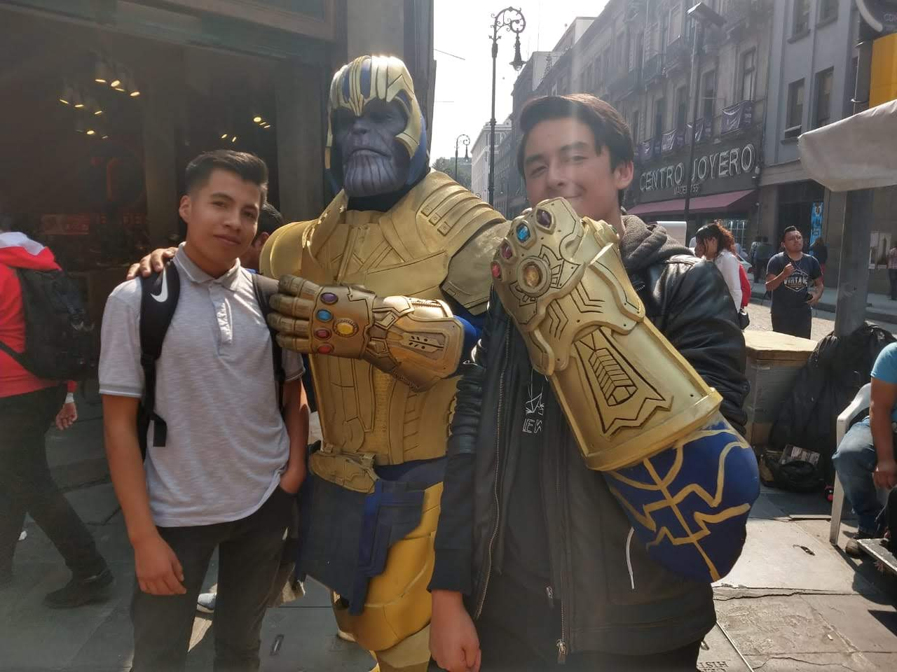

Esta sección la dividire en dos, una con amigos de la secundaria y otra de mis amigos de Voca y solo incluire a los amigos
con los que tenga fotos :(
- Amigos de Secundaria
- Amigos de Voca
Comenzare hablando de ellos de izquierda a derecha, el primero es Felipe, no hablaba con el en primer año, pero una vez lo
ví solo en un recreo y le hable, desde ese entonces se volvío uno de mis mejores amigos hasta la fecha, en ocasiones salimos
a dar la vuelta en bici o a jugar videojuegos, es muy calmado pero muy inmaduro a la vez, pero aún así le tengo un gran aprecio.
El que le sigue es Oscar, nos hablabamos en ocasiones en primero, pero desde una kermes en segundo año el y yo nos hicimos compis,
hasta ahora sigo llevandome bien con el y a veces saliamos a comer saliendo de la escuela :D.
Y terminamos con Alexis, algo curioso es que casi todos nos empezamos a juntar del diario desde dicha kermes jajaja, a el si le
hablaba desde primero, pero no conviviamos mucho, no fue hasta segundo que saliamos al receso juntos del diario, llegamos a salir al cine
y a jugar videojuegos, gracias a ellos es que tengo buenos recuerdos de la secundaria.
Daniela y Geovanny
 Puse juntos a Daniela y a Geovanny porque fueron mis primeros amigos en Voca gracias a la maestra de Orientación, desde ese entonces diario
me juntaba con Daniela, comíamos juntos en las horas libres, nos regresabamos juntos porque vivimos en la misma zona así que luego me venía
con ella y su mamá, era bonito cuando me dejaban en la puerta de mi casa, todos los trabajos en equipo los hacía con ella, hasta que me hice
carga media y ya casi no la veía porque ella tenía clase, despues seguimos en tercero y escogimos carreras diferentes, desde primero ha sido
mi mejor amiga y la extraño mucho :(.
Puse juntos a Daniela y a Geovanny porque fueron mis primeros amigos en Voca gracias a la maestra de Orientación, desde ese entonces diario
me juntaba con Daniela, comíamos juntos en las horas libres, nos regresabamos juntos porque vivimos en la misma zona así que luego me venía
con ella y su mamá, era bonito cuando me dejaban en la puerta de mi casa, todos los trabajos en equipo los hacía con ella, hasta que me hice
carga media y ya casi no la veía porque ella tenía clase, despues seguimos en tercero y escogimos carreras diferentes, desde primero ha sido
mi mejor amiga y la extraño mucho :(.
Con Geovanny era exactamente lo mismo, los tres siempre estabamos juntos en todos lados y en los mismos equipos de trabajo, pero el un dia se
cambio de lugar y ya casi ni nos juntabamos con el, porque se hizo amigos de los de su lugar: sin embargo a el lo veo mas porque también se hizo
carga media y a veces me regreso con el :D.
Edson
A Edson le empecé a hablar a mitad de primer semestre, un dia veníamos en el mexi juntos y desde entonces me juntaba con el diario, nos llegamos a
saltar muchas clases juntos porque nos ibamos a jugar videojuegos o porque no haciamos la tarea, era muy divertido estar con el hasta que deserto
porque se fue a vivir a Hidalgo, a veces viene para salir con todo nuestro grupito de amigos, cosa que aprecio mucho :D.
Hugo
No hablaba con el en primer semestre, pero una vez nos toco presentar el mismo ETS en el mismo salon y desde ese dia me llevo bien con el, casi siempre
nos juntabamos Hugo, Edson, Ivan (otro compi al cual lo aprecio mucho, pero no tengo fotos con el) y yo, a veces eramos mas, pero nosotros cuatro siempre
estabamos juntos, casi diario saliendo de clases nos ibamos a jugar videojuegos o a comer pastes, Ivan no salía con nocotros porque el vive por ojo de
agua y nosotros somos de Ciudad Azteca, sin embargo todos nos separamos cuando yo llegue a tercer semestre, Edson deserto y Hugo y Ivan se rregresaron a
primero, aún asi seguimos siendo buenos amigos.